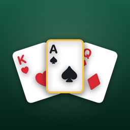

Judgment Card Game
Look at your hand. Call exactly how many tricks you'll win. Then make it happen.
Download on the App StoreSupport
Questions, bugs or ideas? Email cppingale@gmail.com and you'll get a reply within a couple of days.
How do I play?
Each round everyone bids how many tricks they'll take. Hit your bid exactly to score 10 plus your bid; miss and you score nothing. Trumps rotate spades, hearts, diamonds, clubs. The in-app How to Play walks through it with animations.
How do I play with friends?
Sign in to Game Center (Settings › Game Center), then tap Invite on the home screen. Friends join your lobby, and empty seats can be filled with bots.
Leaderboards or achievements aren't showing
They need Game Center. Sign in, open the app once, and your best score, wins, streak and XP are sent automatically.
How do I restore a purchase?
Open Judgment Plus or Table themes and tap Restore purchases. Purchases are tied to your Apple ID.
How do I cancel Judgment Plus?
Subscriptions are managed by Apple: Settings › your name › Subscriptions › Judgment. Cancel at least 24 hours before renewal to avoid the next charge. Manage subscriptions.
I want a refund
Refunds are handled by Apple at reportaproblem.apple.com.